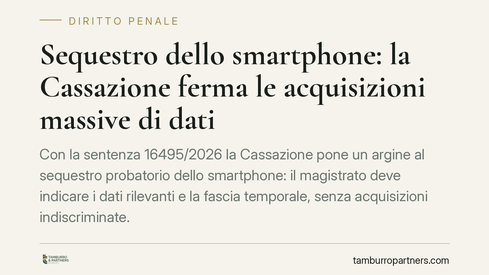

Sequestro dello smartphone: la Cassazione ferma le acquisizioni massive di dati
Con la sentenza 16495/2026 la Cassazione pone un argine al sequestro probatorio dello smartphone: il magistrato deve indicare i dati rilevanti e la fascia temporale, senza acquisizioni indiscriminate. E la restituzione del telefono non basta se la copia forense integrale resta negli atti. Un principio che tocca chiunque finisca sotto indagine.

Il caso e la decisione
La Seconda Sezione penale della Corte di Cassazione, con la sentenza n. 16495/2026, è intervenuta su una prassi investigativa diffusa: il sequestro dello smartphone seguito dall'estrazione integrale del suo contenuto.
Il dispositivo oggi non è un semplice telefono. Contiene conversazioni, fotografie, cronologia degli spostamenti, dati sanitari, credenziali bancarie, relazioni personali. Acquisirlo per intero significa, di fatto, fotografare l'intera vita di una persona.
La Corte afferma un principio netto: il sequestro probatorio deve essere mirato. Il magistrato ha l'onere di delimitare i dati pertinenti al reato ipotizzato e la fascia temporale di interesse. L'acquisizione massiva e indifferenziata di tutto il contenuto è illegittima.
Inquadramento normativo
Il riferimento è l'art. 253 del codice di procedura penale, che consente il sequestro del "corpo del reato e delle cose pertinenti al reato necessarie per l'accertamento dei fatti".
La parola chiave è *pertinenza*. Il sequestro probatorio non è uno strumento esplorativo: non serve a cercare genericamente prove di qualunque illecito, ma ad acquisire elementi collegati a una specifica ipotesi di reato. La Cassazione ricorda che il principio di proporzionalità – di matrice costituzionale (artt. 15 e 13 Cost.) e convenzionale (art. 8 CEDU, tutela della vita privata) – impone di sacrificare la riservatezza solo nella misura strettamente necessaria.
Il passaggio più rilevante riguarda la *copia forense*. La restituzione materiale del dispositivo all'indagato non elimina il pregiudizio se l'autorità trattiene la copia integrale dei dati. In quel caso, l'interesse a impugnare il provvedimento permane: il bene tutelato non è l'oggetto fisico, ma il contenuto informativo.
Implicazioni pratiche
Per chi è coinvolto in un'indagine, la decisione ha effetti concreti.
Primo: il decreto di sequestro deve essere motivato in modo specifico. Non basta disporre il prelievo del telefono; occorre indicare quali categorie di dati si cercano e perché. Un provvedimento generico è censurabile davanti al tribunale del riesame.
Secondo: l'estrazione dei dati da parte della polizia giudiziaria deve rispettare i limiti fissati. Un'acquisizione che travalichi la pertinenza o la fascia temporale può essere contestata.
Terzo: la restituzione del dispositivo non chiude la partita. Finché esiste una copia integrale non selezionata, l'indagato conserva un interesse concreto e attuale a ottenere la cancellazione dei dati estranei all'indagine.
Questo sposta l'attenzione difensiva dal momento del sequestro a quello, spesso trascurato, della gestione della copia forense e della selezione del materiale rilevante.
Cosa fare in concreto
- Leggere con attenzione il decreto di sequestro. Verificare se indica i dati pertinenti e un arco temporale definito, o se autorizza un'acquisizione generica.
- Valutare tempestivamente il riesame. L'impugnazione davanti al tribunale del riesame ha termini brevi (dieci giorni dalla conoscenza del provvedimento): consigliamo di attivarsi subito.
- Chiedere la restituzione mirata e la distruzione dei dati non pertinenti. Non limitarsi a riavere il telefono, ma intervenire sulla copia forense.
- Documentare l'estensione dell'estrazione. Richiedere i verbali delle operazioni tecniche compiute dalla polizia giudiziaria, utili a ricostruire cosa è stato effettivamente acquisito.
- Rivolgersi a un difensore prima di consegnare credenziali o codici di sblocco. Le scelte compiute in questa fase incidono sull'intero procedimento.
Perché questa sentenza conta
La pronuncia si inserisce in un orientamento che tenta di adeguare categorie processuali nate per il mondo cartaceo alla realtà digitale. Il sequestro di un faldone di documenti e quello di uno smartphone non sono equiparabili: il secondo espone a un controllo potenzialmente totale sulla persona.
Imporre limiti di pertinenza e temporali è un modo per ricondurre l'attività investigativa dentro i confini della proporzionalità. Per la difesa, significa disporre di argomenti più solidi quando l'acquisizione dei dati appare sproporzionata rispetto all'ipotesi di reato contestata.
Resta ferma la necessità di una valutazione caso per caso: ogni provvedimento ha una motivazione propria, e l'esito di un'eventuale impugnazione dipende dalle circostanze concrete.
---
*Contributo informativo a cura di Tamburro & Partners - Avv. Giuseppe Tamburro. Non costituisce parere legale.*
Ogni condominio ha una storia a sé.
Se gestisci un'amministrazione e vuoi un confronto su una specifica questione condominiale, scrivi allo studio. Ti rispondiamo entro un giorno lavorativo.